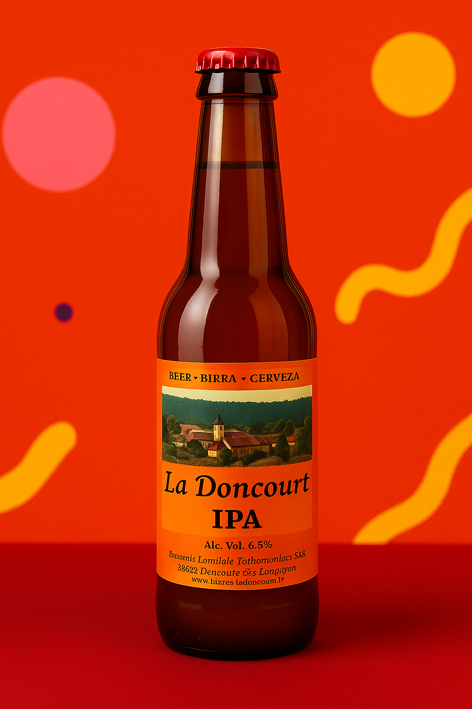

Nos Bières & E-Shop

La Doncourt IPA
Notre IPA associe une robe cuivrée intense à un taux d'alcool modéré (6,5%). Sa mousse est abondante et persistante.
Elle s’apprécie d’abord au nez par le développement puissant d’arômes fruités et de fleurs. Passés les premiers arômes fleuris, elle dérive progressivement vers une amertume soutenue qui persistera longtemps en bouche.
Disponible en 33cl ou 75cl.
4.00 €

La Doncourt Blanche
Notre blanche se caractérise par une robe mimosa pâle naturellement troublée grâce à l’emploi de malt de froment.
Légère, désaltérante, elle associe un subtil goût d’agrumes (citron, orange, pamplemousse) et de coriandre. Faible taux d’alcool (5,2%).
Disponible en 33cl ou 75cl.
3.70 €

La Doncourt Blondinette
D'un agréable jaune d'or, notre blondinette titre 5,2% d’alcool. Sèche et légèrement amère, elle révèle des saveurs plaisantes de malt ainsi qu’une pointe d'acidité.
Disponible en 33cl ou 75cl.
3.70 €

La Doncourt Triple Blonde
Notre triple blonde est une bière complexe et bien trempée, dotée d’une robe miel. Elle développe en bouche une légère amertume ainsi que des arômes d’agrumes et de bois. Taux d'alcool de 8%.
Disponible en 33cl ou 75cl.
4.50 €

La Doncourt Triple Dark
La robe de notre Triple Dark est d’un sombre profond. Grâce aux grains torréfiés, elle mélange des arômes de cacao, de caramel et de café. 8% d’alcool, ronde en bouche et peu amère.
Disponible en 33cl ou 75cl.
4.50 €